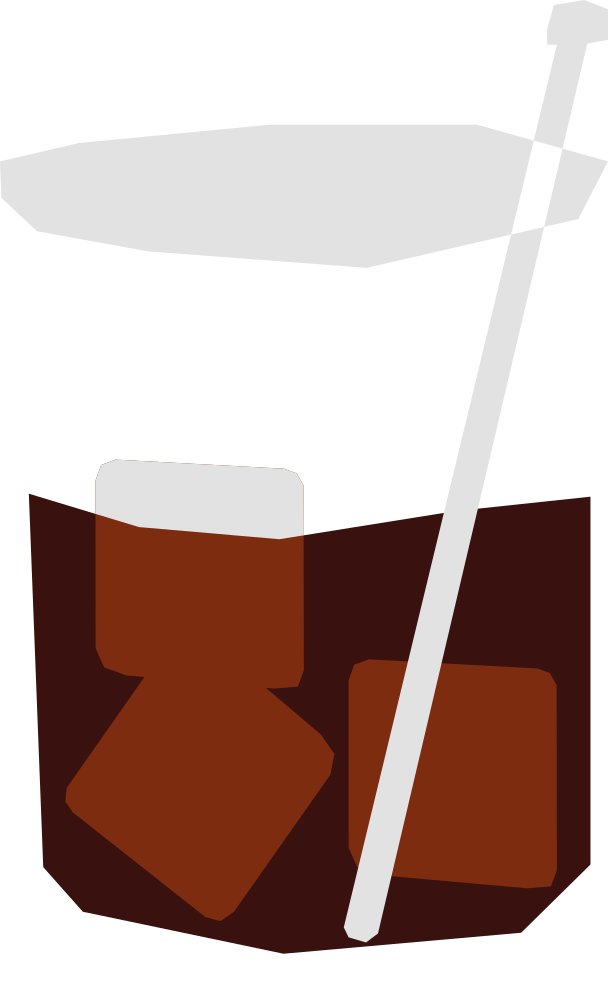

¿Ruso o belga?
Creado en 1949 en Bruselas por el bartender Gustave Tops, en honor a la embajadora estadounidense en Luxemburgo. A pesar de su nombre, no tiene ningún origen ruso más allá del vodka como ingrediente base.
RECETA
- 50ml vodka
- 20 ml licor de café
- Agrega el vodka y el licor de café a un vaso con hielo.
- Mezcla suavemente hasta enfriar.
Vaso: Old fashioned / vaso bajo